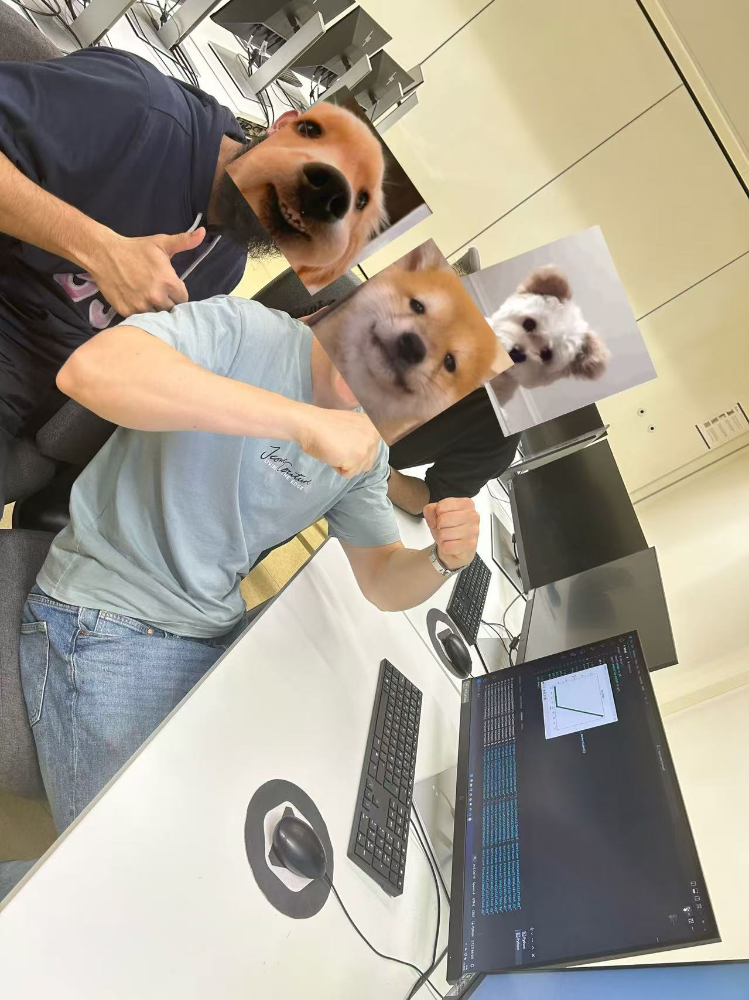
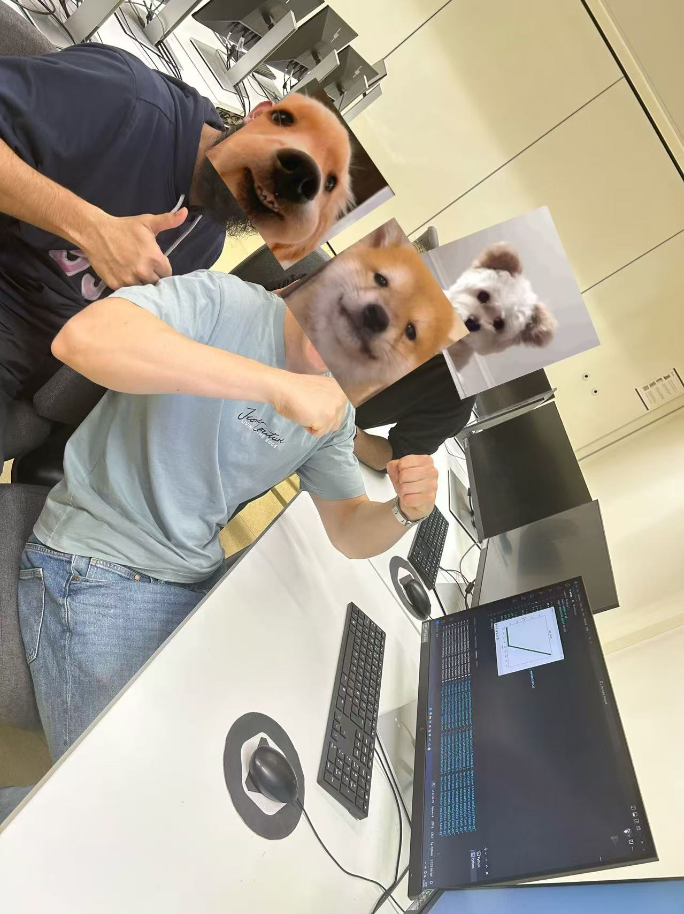

👋 Professional Summary
I am Ting Shu from Shanghai, China, with over 10 years of nursing experience. In 2018, I joined a Sino-Japanese joint venture in healthcare, which gave me valuable insights into the impact of technology in this field.
From September 2019 to November 2022, I worked as a Clinical Research Manager for an American medical technology company, where I first engaged with IT through a project at Cognoa, applying AI to support children with autism. This experience showed me the profound ways technology can assist vulnerable populations, inspiring me to return to school to pursue further IT-related knowledge.
💻 Skills & Education
Looking for an internship opportunity in IT-related field
Participated in: Hackathon 2025, Game Design Competition 2025
Programming
Python (Beginner)
JavaScript (Beginner)
HTML/CSS (Beginner)
Databases & Systems
MySQL (Intermediate)
Linux (Beginner)
Design Tools
Figma (Beginner)
Education
LAB University of Applied Sciences (Bachelor): IT (2024-2028)
Tongji University (Bachelor): Nursing (2015-2018)
Nanchang University(College): Nursing (2007-2011)
📌 Professional Experience
Cognoa (Clinical Research Manager) 2020.09-2021.11
Cognoa (Clinical Research Associate) 2019.09--2020.09
- Led clinical trials following SOPs, submitting data to IRB/EC
- Collected 100+ clinical data samples from three centers
- Developed training materials for video analysts Hit the website about FDA Authorizes Marketing of Diagnostic Aid for Autism Spectrum Disorder Hit the website about Cognoa Receives FDA Marketing Authorization for First-of-its-kind Autism Diagnosis Aid
Sheng Biao (Clinical Research Coordinator) 2018.03-2019.06
- Coordinated multi-center clinical data collection
- Managed data validation and archiving
International Peace Maternity and Child Health Hospital (NICU/Operating Room Nurse) 2013.04--2018.0
Children's Hospital of Shanghai (Surgical Ward Nurse) 2011.12--2013.04
Shanghai Children's Medical Center (Outpatient Anesthesia Department Nurse) 2010.11--2011.12
❓ Career Transition Q&A
Why transition from healthcare to IT?
My experience at Cognoa revealed how technology - particularly AI - can transform healthcare outcomes. Working on the autism diagnosis project demonstrated:
- 🖥️ Technology's potential to support vulnerable populations
- 📊 Data-driven solutions for complex medical challenges
- 🌍 The growing need for tech-healthcare interdisciplinary experts
This inspired me to bridge my medical expertise with technical skills to develop impactful health tech solutions.
🎓 Bachelor Thesis Project
Working Title: Empowering Aging-in-Place: A Supportive App for Independent Seniors in Finland
As Finland faces an aging population, many seniors who are mentally sound and physically capable still prefer to live independently rather than in nursing homes. However, daily tasks like showering or walking may still pose risks without supervision. My app aims to offer scheduled, flexible support to these seniors, helping them maintain independence safely.
This idea was inspired by my current part-time job, where I assist elderly individuals based on my own schedule. Through this, I realized the model could benefit not only the elderly but also international students like myself.
- 📈 Addresses the real demand created by Finland’s aging society
- 🧑🎓 Helps students earn income without conflicting with academic schedules
- 👨👩👦 Reduces stress on working families needing elder care support
- 🌍 Enables international students to adapt to and better understand Finnish society
My plan is to research the needs of both seniors and students, and prototype an app that can match the two flexibly, securely, and meaningfully.
🧭 My 6-Month Roadmap
This roadmap outlines my plans from now until the end of summer, combining academic growth, personal development, and career preparation.
- April–May: Continue improving my portfolio and finalize web & data projects
- June: Apply for IT-related internships, especially in AI/ML, LLM, and game development fields
- July–August: Focused learning on machine learning topics; create workshop-style teaching slides
- August: Ask about assistant tutor opportunities for second-year students; prepare to share ML knowledge with peers
- Ongoing: Practice Finnish and English consistently (reading, speaking, and daily use)
🎯 Activities During Studies
I actively participated in several events and team projects during my studies, including:
- iWeek workshops: 3D printing, VR experiences, and Data Visualization
- Hackathons: Local university hackathon and FGJ25 game jam
- Outreach workshop: Organized and led a Data Visualization Workshop for high school students on School Day


 


📧 Contact Information
Email: tshu927@gmail.com
Mobile: +358 417 409 336
Address: Laatikkotehtaankatu 5C 38, Finland